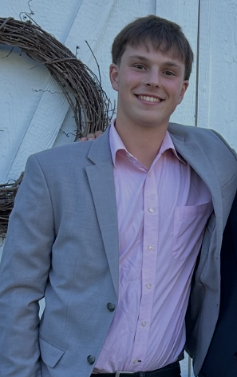

Sam
Sam is currently a Senior studying Information Science. Sam works remotely for a pickleball software company working on the sales team. This is Sam's second year at UW as he transferred from Milwaukee. Sam is from Madison, Wisconsin. Sam is interested in how technology affects communication, business, and everyday life. In his free time, Sam enjoys playing sports, hanging out with his roomates, and enjoying the campus life.

Jesse
Jesse Ijiwola is a senior from Chicago majoring in Computer and Information Science. He plans to specialize in cloud cybersecurity and protect modern infrastructure from evolving threats. He is gaining experience as an IT Support Student at the UW Law School. Outside of studying and working, Jesse enjoys playing volleyball and video games and watching his favorite sports teams.
Joel
A Milwaukee-raised Mexican-American senior at the University of Wisconsin-Madison pursuing a bachelors of science in Information Science and Data Science. Joel works in Data Analytics in the Milwaukee area and hopes to create impact using emerging technology in various industries to drive production. In his free time, Joel enjoys watching film, playing tennis, and being involved in on-campus communities.